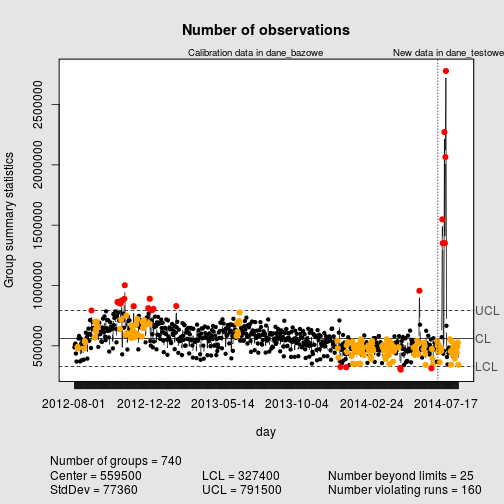

qcc (data=dane_bazowe, newdata=dane_testowe,
type="xbar.one", title="Number of observations", xlab="day")

## List of 15
## $ call : language qcc(data = dane_bazowe, type = "xbar.one", newdata = dane_testowe, title = "Number of observations", xlab = "day")
## $ type : chr "xbar.one"
## $ data.name : chr "dane_bazowe"
## $ data : int [1:700, 1] 486975 508788 519119 436171 369792 490799 490547 478138 560497 581914 ...
## ..- attr(*, "dimnames")=List of 2
## $ statistics : Named int [1:700] 486975 508788 519119 436171 369792 490799 490547 478138 560497 581914 ...
## ..- attr(*, "names")= chr [1:700] "2012-08-01" "2012-08-02" "2012-08-03" "2012-08-04" ...
## $ sizes : Named int [1:700] 1 1 1 1 1 1 1 1 1 1 ...
## ..- attr(*, "names")= chr [1:700] "2012-08-01" "2012-08-02" "2012-08-03" "2012-08-04" ...
## $ center : num 559458
## $ std.dev : num 77361
## $ newstats : Named int [1:40] 450028 508668 465635 364135 470571 480241 457537 571840 1548212 1351203 ...
## ..- attr(*, "names")= chr [1:40] "2014-07-02" "2014-07-03" "2014-07-04" "2014-07-05" ...
## $ newdata : int [1:40, 1] 450028 508668 465635 364135 470571 480241 457537 571840 1548212 1351203 ...
## ..- attr(*, "dimnames")=List of 2
## $ newsizes : Named int [1:40] 1 1 1 1 1 1 1 1 1 1 ...
## ..- attr(*, "names")= chr [1:40] "2014-07-02" "2014-07-03" "2014-07-04" "2014-07-05" ...
## $ newdata.name: chr "dane_testowe"
## $ nsigmas : num 3
## $ limits : num [1, 1:2] 327374 791541
## ..- attr(*, "dimnames")=List of 2
## $ violations :List of 2
## - attr(*, "class")= chr "qcc"